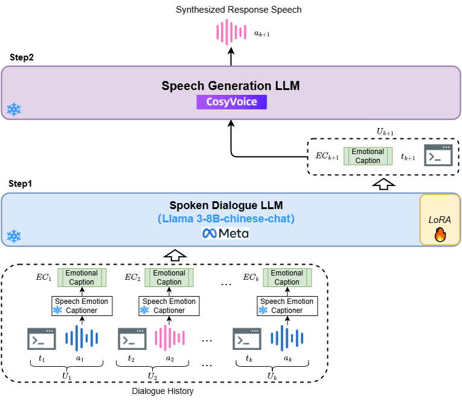

ABSTRACT
Spoken conversation aims to generate empathetic responses based on multimodal chat history. Traditional methods have used Large Language Models (LLMs) to understand paralinguistics and infer responses. However, existing work faces two main challenges: 1) Emotions are often expressed using discrete labels, which may not capture deep emotional nuances for effective empathy. 2) Text-only LLMs are typically used, neglecting the potential of Speech LLMs for response generation.
To tackle these issues, we introduce ECap-Spoken, a Chinese expressive spoken conversation system that integrates text and speech LLMs with emotion captions. Our approach leverages a Spoken Dialogue LLM to infer response text and speech emotion captions from multimodal history, followed by a Speech Generation LLM to produce expressive speech aligned with emotional cues. We also create a large-scale Chinese spoken conversation dataset with emotion caption, ECap-NCSSD-ZH.
Subjective and objective experiments on LLaMA structure demonstrate our ECap-Spoken achieves superior performance in generating empathetic responses compared to existing advanced systems. Code and speech samples are available at: https://github.com/AI-S2-Lab/ECap-Spoken.
MODEL ARCHITECTURE

Figure:The overview of ECap-Spoken, that consists of two steps. Step-1 adopts the Spoken Dialogue LLM to infer the response text and its corresponding speech emotion caption. Step-2 employs the Speech Generation LLM to generate the final empathetic response speech.